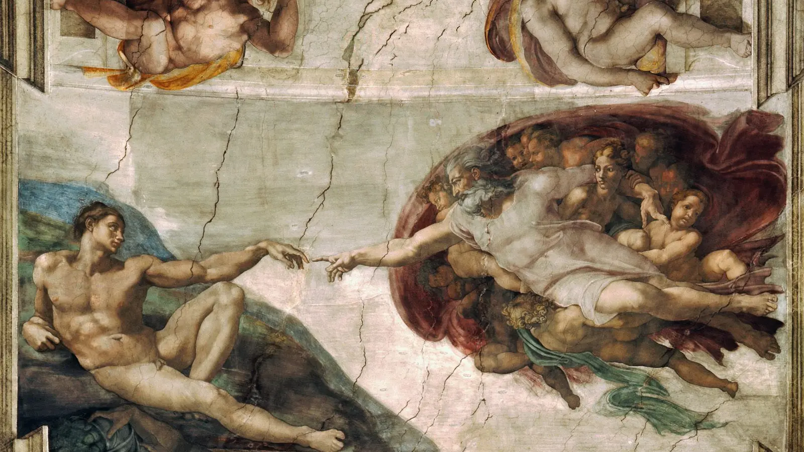

Sistina Şapeli’nin tavanına baktığınızda gözünüzü yüzlerce figür arasından iki ele götüren görünmez bir kuvvet vardır. Sağ tarafta Tanrı, çevresindeki figürleri de sürükleyen büyük bir hareketin içinden Âdem’e doğru uzanır; işaret parmağı kararlı, bileği canlı, bütün bedeni ileri yönelmiştir. Sol tarafta yeni yaratılmış insan toprağa yaslanır. Âdem’in kolu Tanrı’ya uzanır ama eli aynı enerjiye sahip değildir; bileği gevşek, parmağı neredeyse isteksizmiş gibi aşağı doğru kıvrılmıştır. İki işaret parmağı birbirine son derece yaklaşır ve tam orada durur. Aralarında yalnızca küçük bir boşluk kalır. Michelangelo, insanın yaratılışını neden tamamlanmış bir temasla değil, temasın hemen öncesindeki bu gerilimli anla gösterdi?
Halk arasında çoğunlukla “Âdem’in Yaratılışı tablosu” diye anılan eser teknik olarak bağımsız bir tuval resmi değil, Sistina Şapeli tavanındaki büyük fresk programının bir parçasıdır. Fakat onu dünyanın en tanınmış görüntülerinden biri yapan şey, bütün tavan programını bilmeden de hissedilebilen bu birkaç santimetrelik mesafedir. Tanrı Âdem’e hayat mı, ruh mu, akıl mı veriyor? Âdem henüz cansız mı, yoksa yaratılmış fakat ilahi kıvılcımı almak üzere mi? Tanrı’nın çevresindeki kadın kim? Kırmızı örtü gerçekten insan beyninin kesitine mi benziyor; yoksa rahim, plasenta ve doğumla mı ilişkili? Michelangelo’nun anatomi bilgisi bu benzerlikleri kasıtlı olarak gizlediği anlamına gelir mi? Bu soruların bazıları freskin kendisinden, Tekvin metninden ve Michelangelo’nun çalışma pratiğine ilişkin belgelerden güçlü cevaplar alır; bazıları ise yüzyıllar sonra geliştirilmiş, büyüleyici fakat kanıtlanmamış yorumlardır. Eseri anlamanın anahtarı, ikisini birbirine karıştırmamaktır.
Âdem’in Yaratılışı Bir Tablo mu, Fresk mi?
Âdem’in Yaratılışı, Vatikan’daki Sistina Şapeli’nin tonozunda yer alan ve Michelangelo’nun 1508 ile 1512 arasında gerçekleştirdiği tavan dekorasyonunun merkezî Tekvin sahnelerinden biridir. Papa II. Julius’un siparişiyle başlayan proje, Michelangelo’nun kariyerinde olağanüstü bir dönemeçti. Sanatçı daha önce özellikle heykeltıraş olarak ün kazanmıştı; Pietà ve Davut gibi eserleri onun mermerde insan bedenini nasıl kavradığını zaten göstermişti. Sistina tavanı ise bu heykelsi beden anlayışını devasa bir mimari yüzeye taşıdı. Michelangelo için resim burada neredeyse renklerle kurulmuş bir heykel dünyasına dönüştü.
“Fresk” sözcüğü yalnızca duvara yapılmış resim anlamına gelmez. Buon fresco tekniğinde pigmentler henüz ıslak olan kireç sıva üzerine uygulanır; sıva kururken renk yüzeyle bütünleşir. Bu yöntem ressama yağlıboyadaki gibi sınırsız düzeltme zamanı vermez. Çalışılabilecek alan, o gün tamamlanabilecek büyüklükteki taze sıva bölümlerine, yani giornate denen günlük çalışma parçalarına ayrılır. Sistina tavanında teknik incelemeler bu çalışma düzeninin izlerini ortaya koymuştur. Bu nedenle internette tekrarlanan “Michelangelo Âdem’i tam 16 günde boyadı” gibi kesin süre iddiaları, hangi teknik izlerin nasıl sayıldığı ve hangi kısmın “sahne” kabul edildiği açıklanmadan tarihsel gerçek gibi sunulmamalıdır.
Âdem’in Yaratılışı genellikle yaklaşık 1511 tarihine yerleştirilir. Freskin boyutları kaynaklarda yaklaşık 280 × 570 cm olarak verilir; yani internette ekranlarda gördüğümüz iki el ayrıntısından çok daha büyük, yatay bir kompozisyondur. Üstelik onu gerçek mekânda izleyen kişi tabloya göz hizasında yaklaşmaz; eser yerden metrelerce yukarıdaki eğimli tonoz yüzeyindedir. Michelangelo figürlerin büyüklüğünü, konturlarını ve jestlerini bu uzaklıktan okunabilecek biçimde tasarlamak zorundaydı. British Museum’daki Âdem hazırlık çiziminin küratöryel kaydı da sanatçının konturları zeminden görülebilecek açıklığa kavuşturma çabasına özellikle dikkat çeker.
Projenin başlangıcı da sanatçı hakkında anlatılan romantik efsanelerden daha karmaşıktır. Michelangelo kendisini güçlü biçimde heykeltıraş kimliğiyle tanımlıyor ve II. Julius’un mezarı üzerinde çalışmak istiyordu. Tavan siparişi onun tercih ettiği iş değildi; yine de dört yıllık süreç sonunda Batı sanatının en kapsamlı figür programlarından birini yarattı. Sanatçının bütün tavanı sırtüstü yatarak boyadığı anlatısı ise doğru değildir. Michelangelo tavana ulaşmak için özel bir iskele sistemi üzerinde çalıştı; başını ve gövdesini yukarı kaldırmak zorundaydı ve bu fiziksel güçlüğü Giovanni da Pistoia’ya yazdığı mizahi şiir ve çizimde de anlattı. “Yatarak resim yapan dâhi” görüntüsü popüler kültürde etkileyici olsa da çalışma biçimini doğru yansıtmaz.
Tavanın kendisi de tek bir dev resim değildir. Mimari bir yüzey üzerine dağıtılmış, birbirine ikonografik ve biçimsel olarak bağlanan çok sayıda sahne ve figür grubundan oluşur. Âdem’in Yaratılışı’nın bugün tek başına bir poster gibi dolaşması, onun ilk işlevini kolayca unutturur. Michelangelo bu sahneyi bir galeri duvarında yalnız başına görülmesi için değil, şapelin ayinsel ve teolojik ortamında, başka yaratılış ve insanlık tarihi sahneleriyle ilişki içinde okunması için tasarlamıştı. Bu bağlamı geri getirdiğimizde iki el arasındaki boşluk yalnızca ünlü bir ayrıntı olmaktan çıkar ve bütün insanlık anlatısındaki bir eşik hâline gelir.
Sistina Şapeli Tavanındaki Büyük Hikâye
Âdem’in Yaratılışı’nı yalnızca iki elden ibaret düşünmek, bir romanın tek cümlesini kapağa dönüştürüp geri kalanını unutmaya benzer. Sistina Şapeli tavanında Michelangelo, mimari çerçeveler yanılsaması, anıtsal çıplak gençler, peygamberler, sibyllalar, İsa’nın atalarıyla ilişkilendirilen figürler ve Tekvin kitabından sahneler arasında son derece karmaşık bir program kurdu. Tonozun merkezindeki dokuz ana sahne, dünyanın yaratılışından Nuh anlatılarına uzanan büyük bir insanlık başlangıcı dizisi oluşturur.
Anlatının kronolojik akışında önce Tanrı’nın ışığı karanlıktan ayırması, güneş ve ayla bağlantılı yaratılış sahneleri ve suların ayrılması gibi kozmik başlangıçlar gelir. Ardından insanlık tarihinin merkezi açılır: Âdem’in yaratılması, Havva’nın yaratılması, ilk günah ile cennetten kovuluşun aynı kompozisyonda birleştirilmesi. Sonraki sahneler Nuh’un kurbanı, tufan ve Nuh’un sarhoşluğu üzerinden insanın düşüş sonrası tarihine geçer. Bu dizilim, yaratılışın kusursuz başlangıcından günah, yargı ve kırılganlığa doğru ilerleyen teolojik bir anlatı kurar.
Fakat tavandaki anlatı sırası ile Michelangelo’nun boyama sırası aynı değildir. Ressam çalışmaya şapelin giriş tarafına yakın Nuh sahnelerinden başladı ve zamanla sunağa doğru ilerledi. Bu teknik kronoloji önemlidir; çünkü ilk bölümlerde daha küçük ve kalabalık figür grupları kullanırken ilerledikçe kompozisyonlarını sadeleştirdi, figürleri büyüttü ve hareketleri daha anıtsal hâle getirdi. Âdem’in Yaratılışı bu olgunlaşmış evrede ortaya çıktı. Burada anlatı kalabalığı neredeyse ortadan kalkar: solda tek başına insan, sağda Tanrı ve beraberindeki yoğun figür grubu, ortada ise olağanüstü miktarda boş gökyüzü vardır.
Merkez sahneleri çevreleyen dev peygamberler ve antik dünyanın kadın kâhinleri olarak kabul edilen sibyllalar, programı yalnızca Tekvin’in resimli özeti olmaktan çıkarır. Hıristiyan yorum geleneğinde peygamberler ve sibyllalar Mesih’in gelişine yönelik kehanetlerle ilişkilendirilmişti. Böylece şapelin tavanı yaratılış, düşüş ve kurtuluş beklentisini birbirine bağlayan daha geniş bir Hıristiyan tarih anlayışına açılır. Rönesans sanatı bağlamında bu kadar etkileyici olan, Michelangelo’nun teolojik programı yüzlerce bedene dönüştürmesidir. Doktrin metinle değil; omuzların dönüşü, kasların gerilimi, bakışlar ve hareket eden insan figürü aracılığıyla görünür hâle gelir.
Merkezdeki sahneler aynı zamanda ölçek ve anlatı ekonomisi bakımından şaşırtıcı bir gelişim gösterir. Nuh anlatılarındaki kalabalık insan grupları, olayın dramatik karmaşasını taşırken yaratılış sahnelerinde Michelangelo giderek daha az figürle daha büyük fikirler kurar. Tanrı’nın gök cisimlerini yaratması, kozmik hareketi dev beden jestleriyle aktarır; Âdem’in Yaratılışı ise insanlık tarihinin başlangıcını iki ana figür arasındaki sessiz gerilime indirger. Bu sadeleşme, sahneyi uzaktan okunur kıldığı kadar teolojik fikri de yoğunlaştırır.
Âdem’in Yaratılışı tam bu büyük zincirde, kozmik yaratılış ile insanlık dramı arasındaki eşiktedir. Âdem henüz günah işlemiş insan değildir; Havva’nın yaratılışı ve yasak meyve anlatısı henüz ileridedir. Michelangelo onu insanlık tarihinin bütün yükünden önce, yaratıcıyla ilk ilişkisinin kurulduğu anda gösterir. Bu yüzden iki parmak arasındaki küçücük boşluk, yalnızca tek sahnenin değil, tavanın bütün anlatısındaki en kritik eşiklerden birine dönüşür. Öncesinde evren vardır; sonrasında insan tarihi başlayacaktır. Aradaki o an, insanın dünyaya yalnızca fiziksel bir varlık olarak değil, teolojik anlatının sorumluluk taşıyan öznesi olarak girmesini görünür kılar.
Michelangelo Hangi Yaratılış Anını Resmetti?
Tekvin kitabı insanın yaratılışını iki tamamlayıcı anlatım düzleminde verir. Tekvin 1:26–27’de insanın Tanrı’nın “suretinde” yaratılması vurgulanır. Tekvin 2:7’de ise Tanrı’nın insanı toprağın tozundan biçimlendirdiği ve burnuna yaşam soluğu üflediği anlatılır. Michelangelo bu metinlerden hiçbirini kelimesi kelimesine resmetmedi. Freskte Tanrı Âdem’in burnuna eğilip nefes üflemez; Âdem’in bedeni de çamurdan şekillenmekte olan yarı biçimli bir kütle değildir. İnsan bedeni zaten tamamlanmış, güçlü ve ideal güzelliğe sahip görünür.
Sanatçının büyük buluşu, metindeki “yaşam verme” fikrini nefes yerine yaklaşan bir dokunuşa dönüştürmesidir. Tanrı’nın eli ile Âdem’in eli arasındaki elektriksel gerilim, Kutsal Kitap’ta tarif edilen fiziksel bir jest değildir. Michelangelo metnin teolojik özünü alıp son derece ekonomik bir görsel dile çevirir. Yaşamın kaynağı Tanrı’dır; insan ondan gelir; fakat insan yaratıldığı anda ayrı bir varlık olarak karşısında durur. İki bedenin benzerliği Tekvin’deki “Tanrı’nın sureti” fikrini görselleştirirken, aralarındaki boşluk yaratıcı ile yaratılanın özdeş olmadığını da hatırlatır.
Burada “Âdem o anda tamamen ölü müdür?” sorusuna freskten kesin biyolojik bir cevap çıkarmak güçtür. Gözleri açıktır, başını Tanrı’ya çevirmiştir ve kolunu ona doğru uzatmaktadır. Bunlar tam anlamıyla cansız bir bedenin davranışları değildir. Öte yandan duruşundaki ağırlık, gevşek el ve Tanrı grubunun enerjisiyle kurulan karşıtlık, henüz tamamlanmamış bir canlılık izlenimi yaratır. Michelangelo sanki “ölü beden” ile “canlı insan” arasında mantıksal olarak imkânsız görünen bir ara an yaratmıştır: Âdem görebilecek ve uzanabilecek kadar vardır, fakat kendisini bütünüyle harekete geçirecek güç henüz ona ulaşmamıştır.
Bu görsel paradoks, eserin yüzyıllardır etkisini korumasının nedenlerinden biridir. Resim bir önceki ve bir sonraki anı aynı anda düşündürür. Bir saniye önce parmaklar daha uzaktır; bir saniye sonra belki temas edecektir. Fakat freskte o “bir saniye sonra” hiçbir zaman gelmez. İzleyici, yaratılışın tamamlanmasını zihninde gerçekleştirmek zorunda kalır.
Michelangelo’nun seçimi, yaratılışı maddi üretim sürecinden ruhsal ve zihinsel eşiğe taşır. Âdem’in bedeninin nasıl biçimlendirildiğini görmeyiz; sonuç zaten önümüzdedir. Sorulan soru artık “Tanrı insan bedenini nasıl yaptı?” değil, “bu kusursuz beden hangi anda insan oldu?” gibidir. İşte hayat, ruh, akıl, bilinç ve irade üzerine sonraki yorumların doğabilmesinin nedeni budur. Fresk bu kavramlardan birini yazıyla seçmez; fakat bedensel tamamlanmışlık ile etkinlik eksikliği arasındaki fark, izleyiciyi görünmeyen bir armağanın ne olduğunu düşünmeye zorlar.
Parmaklar Neden Birbirine Değmiyor?
Âdem’in Yaratılışı parmaklar neden değmiyor sorusunun en güvenli cevabı, kompozisyonun kendisinde saklıdır: Michelangelo sonucu değil, sonucun hemen öncesindeki gerilimi resmetmiştir. Tanrı’nın sağ kolu düz ve kararlı biçimde ileri uzanır. İşaret parmağındaki hareket, bütün figür grubunun soldaki Âdem’e doğru akışıyla aynı yöndedir. Âdem’in sol kolu ise dizinin üzerinde destek bulur; bileği düşer ve işaret parmağı Tanrı’nın parmağına doğru yalnızca son derece sınırlı bir hareket yapar. İki el biçimsel olarak birbirine cevap verir, fakat enerjileri aynı değildir.
Aradaki boşluk küçüktür ama kompozisyon açısından devasa bir işleve sahiptir. Eğer parmaklar birleşseydi izleyici tamamlanmış bir eylem görecekti: Tanrı dokundu, Âdem canlandı. Oysa temasın eksik bırakılması, sahneyi sürekli gelecek zamanda tutar. Gözümüz iki parmağın arasındaki negatif alana kilitlenir ve zihnimiz istemsizce mesafeyi kapatır. Michelangelo böylece boyamadığı birkaç santimetrelik duvar yüzeyini freskin en aktif noktalarından biri hâline getirir.
Yaygın teolojik ve sanat tarihsel okumada bu an, yaşamın veya ilahi canlandırıcı gücün Âdem’e aktarılmasından hemen öncesidir. Tanrı etkin kaynaktır; Âdem alıcıdır. Ancak “Michelangelo parmakları şu nedenle değdirmedim” diye açıklama yaptığı doğrulanmış bir belge bilinmemektedir. Bu ayrım önemlidir. Kompozisyonun görsel mantığı son derece güçlüdür, fakat modern izleyicinin bu mantığı tek bir sanatçı cümlesine dönüştürmesi tarihsel kanıt yaratmaz.
Boşluk aynı zamanda yakınlık ve ayrılığı birlikte taşır. Âdem Tanrı’ya neredeyse dokunabilecek kadar yakındır; bedenlerinin ölçekleri ve uzanan kolları birbirini yankılar. Buna rağmen yaratıcı ile yaratılan arasında son bir mesafe kalır. Hıristiyan teolojisinde insan Tanrı’nın suretinde yaratılır, fakat Tanrı değildir. Fresk bu soyut ayrımı fiziksel bir aralığa dönüştürmüş gibi okunabilir. Bu, Michelangelo’nun belgelenmiş “gizli mesajı” değil; resmin biçimsel yapısıyla teolojik bağlamının birbirini desteklediği güçlü bir yorumdur.
Âdem’in gevşek eli de önemlidir. Popüler internet açıklamalarında bu duruş bazen “Tanrı insana ulaşmak için her şeyi yapıyor, insan ise parmağını biraz kaldırsa yeter” şeklinde ahlaki bir mesaja dönüştürülür. Görsel açıdan çekici olsa da bunun Michelangelo tarafından amaçlandığını kanıtlayan belge yoktur. Âdem’in pasifliği çok daha doğrudan biçimde henüz yaşam enerjisini bütünüyle almamış oluşuyla açıklanabilir. Figür Tanrı’yı reddediyor gibi başını çevirmemiştir; tam tersine ona bakar ve elini uzatır.
Temas gerçekleşseydi sahne yalnızca daha “tamamlanmış” değil, muhtemelen daha durağan olurdu. Rönesans sanatında anlatının en verimli anını seçmek, izleyiciye önceyi ve sonrayı düşündürme imkânı verir. Michelangelo’nun iki eli birbirine kilitlemek yerine ayırması, yaratılışı tek bir fiziksel temasın kaydı olmaktan çıkarır ve sonsuza dek tamamlanmak üzere olan bir olaya dönüştürür. Bu nedenle parmakların arasındaki boşluk, eserin eksikliği değil, anlatı motorudur.
Bir başka önemli nokta, iki parmağın gerçekten “eşit biçimde birbirine koşmamasıdır”. Tanrı’nın eli ileri doğru yönelmiş enerjik grubun uzantısıdır; Âdem’in eli ise toprağa bağlı bedenin son, gevşek ucudur. Böylece hayatın kaynağı ile hayatı alacak beden arasındaki fark yalnızca konu düzeyinde değil, çizgi ve hareket düzeyinde de kurulmuştur. Michelangelo izleyiciye görünmez bir “enerji ışını” çizmez. Enerjiyi, ellerin anatomik davranışları ve aralarındaki gerilim üzerinden hissettirir.
Bu boşluk özgür irade açısından da yorumlanmıştır. İnsan Tanrı’ya yaklaşabilecek bir varlık olarak yaratılmıştır; fakat yaratıcı ile insan arasındaki ilişki mekanik bir birleşme değildir. Yine de bu felsefi okuma ile freskin doğrudan tarihsel anlamını ayırmak gerekir. Eserde Âdem’in bilinçli bir ahlaki seçim yaptığına dair anlatısal işaret yoktur; henüz yasak meyve ve düşüş sahnesine ulaşılmamıştır. Dolayısıyla “Âdem elini kaldırmadığı için insan Tanrı’dan uzak kaldı” gibi sosyal medya cümleleri, freskin dramatik boşluğunu modern bir vaaza dönüştürür ama Michelangelo’nun belgelenmiş açıklaması değildir.
En dengeli sonuç şudur: parmaklar arasındaki mesafe, yaygın sanat tarihsel ve teolojik okumada hayatın, ruhun ya da insanı etkin bir varlık hâline getiren ilahi gücün aktarılmasından hemen önceki gerilimli anı görünür kılar. Aynı zamanda insan ile Tanrı’nın benzerliğini ve ayrılığını tek jestte birleştirir. Fakat bu ayrıntının tek ve kesin anlamını Michelangelo’nun kendi sözleriyle kanıtlayan bir belge yoktur. Freskin gücü, tam da kesin bir açıklama olmadan biçimsel olarak bu kadar açık bir gerilim yaratabilmesindedir.
Tanrı Âdem’e Hayat mı, Ruh mu, Bilinç mi Veriyor?
Bu sorunun tek bir kelimelik cevabı yoktur; çünkü Kutsal Kitap dili, Rönesans teolojisi ve modern izleyicinin “bilinç” kavramı aynı şey değildir. Tekvin 2:7’nin temel fikri Tanrı’nın biçimlendirdiği insana yaşam soluğu vermesi ve insanın yaşayan varlık hâline gelmesidir. Fresk bu canlandırma anıyla ilişkilendirildiğinde “Tanrı Âdem’e hayat veriyor” demek en sağlam başlangıç noktasıdır. “Ruh” sözcüğü de Hıristiyan yorum geleneğinde insanın ilahi kaynağı ve canlılığıyla ilişkilidir, fakat Michelangelo’nun parmakların arasında belirli bir “ruh maddesi” resmettiğini söyleyemeyiz.
“Bilinç” ve “akıl” yorumu özellikle modern beyin teorisiyle birlikte güç kazanmıştır. Frank Lynn Meshberger 1990’da Tanrı’yı çevreleyen biçimi insan beyninin sagittal kesitine benzeterek Michelangelo’nun Tanrı’nın Âdem’e entelekti verdiğini ima etmiş olabileceğini öne sürdü. Bu yaratıcı hipotez, yaşam kıvılcımını biyolojik canlanmadan insan zihninin ortaya çıkışına doğru genişletir. Ancak 16. yüzyıl teolojisini günümüz nörobilim diliyle birebir eşitlemek anakronizm riski taşır.
Michelangelo’nun Âdem’i fiziksel açıdan kusursuz göstermesi bu tartışmayı daha ilginç hâle getirir. Bedeni eksik değildir. Omuz, göğüs, karın ve bacaklar son derece güçlüdür; hatta yeni yaratılmış ilk insandan çok klasik bir kahraman heykelini andırır. Eksik görünen şey anatomi değil, etkinliktir. Beden vardır fakat kendi potansiyelini tam olarak kullanmıyormuş gibidir. Bu nedenle hayat, ruh, akıl ve irade kavramları yorumlarda birbirine yaklaşır: Tanrı’nın jesti, insan bedenini yalnızca hareket eden bir organizmaya değil, irade ve düşünce sahibi insana dönüştüren ilahi armağan olarak okunabilir.
Rönesans’ın insan bedenine verdiği önem burada teolojik anlatıyla çatışmaz; tersine onun görsel aracına dönüşür. İnsan bedeni aşağılanmış bir kabuk değil, yaratılışın merkezinde sergilenmeye değer bir formdur. Michelangelo’nun heykeltıraşlık deneyimi de Âdem’i neredeyse mermerden çıkarılmış gibi hacimli kılar. Tanrı’nın vereceği şey bedeni biçimlendirmekten çok, zaten kusursuz biçimlenmiş bedeni “insan” yapan son ilkedir.
Ruh kavramı da dikkatli kullanılmalıdır. Ortaçağ ve Rönesans Hıristiyan düşüncesinde ruh, modern popüler kültürdeki bedene sonradan yerleştirilen görünmez bir “nesne” gibi basitçe düşünülmez. İnsan varlığının akıl, irade ve canlılık boyutları teolojik tartışmalarda birbirine bağlanır. Michelangelo’nun sahnesi bu karmaşık tartışmaların şeması değildir; fakat bedensel form ile etkin insan oluş arasındaki ayrım, dönemin izleyicisinin yaşamın ilahi kökenini düşünmesine elverişliydi.
Bu nedenle “Tanrı Âdem’e bilinç veriyor” cümlesi, Meshberger’in beyin hipoteziyle birleştiğinde ilgi çekici bir modern okuma olabilir; “Tanrı Âdem’e yaşam veriyor” ise Tekvin anlatısına daha doğrudan dayanır. İkisini aynı kanıt düzeyinde sunmak doğru değildir. Freskin belgelenmiş konusu insanın yaratılmasıdır; yaşam, ruh, akıl ve bilinç arasındaki daha ayrıntılı ayrımlar ise teoloji ve sonraki yorumların alanına girer.
Tanrı ve Âdem Neden Birbirine Benziyor?
Freskin en dikkat çekici özelliklerinden biri Tanrı ile Âdem’in yalnızca birbirine uzanmaması, bedenlerinin kompozisyon içinde görsel yankılar oluşturmasıdır. Âdem solda toprağın eğimine yaslanırken Tanrı sağda uçuşan grubun içinde ileri atılır; ikisinin gövdeleri farklı enerjilere sahip olsa da uzanan kolları aynı eksende birleşir. Bu benzerlik Tekvin 1:26–27’deki insanın Tanrı’nın suretinde yaratılması düşüncesiyle doğal biçimde ilişkilendirilmiştir.
“Suret” fikrini Tanrı’nın fiziksel olarak kaslı, sakallı bir insan bedenine sahip olduğu şeklinde kaba bir biyolojik benzerliğe indirgemek doğru olmaz. Hıristiyan teolojisinde imago Dei akıl, ahlaki kapasite, ruh, özgür irade ve Tanrı’yla ilişki kurabilme gibi farklı biçimlerde yorumlanmıştır. Michelangelo ise görünmez teolojik kavramı görünür kılmak zorundaydı. Bunu insan bedeninin asaletini iki figürde de vurgulayarak yaptı.
Rönesans hümanizmi bu bağlamı anlamaya yardım eder, fakat “Rönesans insanı Tanrı’nın yerine koydu” şeklindeki basit formül yanıltıcıdır. Hümanist kültür antik Yunan ve Roma edebiyatına, retoriğine, tarihine ve insan yeteneklerine güçlü bir ilgi geliştirdi; bu ilgi Hıristiyan inancıyla çok farklı biçimlerde bir arada var olabiliyordu. Michelangelo’nun çıplak Âdem’i klasik heykelin ideal beden anlayışını hatırlatırken aynı zamanda doğrudan kutsal tarihin ilk insanıdır.
Sanatçının anatomik bilgisi de bu idealizasyonun temelidir. Kaslar yalnızca yüzeye çizilmiş dekoratif çizgiler değildir; bedenin ağırlığı, eklemlerin dönüşü ve iskeletin taşıyıcılığı hissedilir. British Museum’daki yaklaşık 1511 tarihli kırmızı tebeşir Âdem etüdü, Michelangelo’nun freskteki uzanmış erkek nü için canlı model üzerinden ayrıntılı çalışma yaptığını gösterir. Müze kaydı çizimi “Tanrı’nın yaratısının Düşüş’ten önceki kusursuzluğu” ile ilişkilendirirken, figürün anatomik gözlem ile idealizasyonu birleştirdiğini vurgular.
Buradaki klasik miras yalnızca “güzel kaslar” meselesi değildir. Rönesans sanatçıları antik heykellerde insan bedeninin ağırlığını, dengesini ve ideal oranlarını yeniden incelemişti. Michelangelo bu mirası kopyalamak yerine dönüştürdü. Âdem’in bedeni antik bir tanrı veya atlet kadar ideal görünür, fakat anlamı Hıristiyan yaratılış öyküsüne aittir. Böylece pagan antikitenin beden dili, İncil’in ilk insanını anlatan araca dönüşür.
Tanrı ile insanın benzer görünmesi de aynı nedenle çift anlam taşır. Görsel olarak birbirlerine cevap verirler; teolojik olarak eşit değildirler. Michelangelo bir yandan insan bedenine olağanüstü değer verirken diğer yandan hareketin kaynağını Tanrı tarafına yerleştirir. Benzerlik, insanın yüceliğini; enerji farkı ise bağımlılığını gösterir. Bu ikili yapı, Rönesans hümanizmini dinsizlik olarak değil, insanın yaratılmış kapasitesine duyulan yoğun ilgi olarak anlamak için iyi bir örnektir.
Freskteki Âdem Neden Bu Kadar Pasif Görünüyor?
Âdem’in bedeni güçsüz değildir; pasiflik hissi kaslarının zayıflığından değil, hareketin tamamlanmamışlığından doğar. Sol dirseği yükselmiş dizine dayanır, kolu bu destek üzerinden Tanrı’ya uzanır. El bileğinin aşağı düşmesi, parmakların gevşekliği ve bedenin toprağın eğrisine uyumu, sağ taraftaki uçuşan grubun gerilimiyle belirgin bir karşıtlık oluşturur. Tanrı’nın çevresinde kumaşlar, saçlar ve bedenler hareket hâlindeyken Âdem’in dünyası neredeyse rüzgârsızdır.
Bu duruşu “tembellik” olarak okumak mümkündür ama zayıf bir tarihsel yorumdur. Âdem’in yüzü Tanrı’ya dönüktür; göz teması kurar ve elini ona uzatır. Reddetme veya kayıtsızlık açık biçimde gösterilmez. Daha güçlü okuma, insan bedeninin yaratılmış fakat canlandırıcı gücü henüz bütünüyle almamış olmasıdır. Michelangelo burada paradoksal bir figür yaratır: Âdem hem kusursuz bir erkek bedeni olarak tamamlanmıştır hem de hareket açısından tamamlanmamıştır.
Toprakla kurduğu fiziksel ilişki de Tekvin anlatısını hatırlatır. Âdem’in adı İbranice adamah, yani toprak/yer ile etimolojik ilişki içindedir. Michelangelo onu çamur yığını olarak göstermese de bedeni doğrudan yeşilimsi yeryüzüne yaslanır. Tanrı ise hiçbir zemine bağlı değildir. Bu karşıtlık, yaratılan insanın dünyaya ait maddi varlığı ile yaratıcı gücün göksel hareketini görsel olarak ayırır.
Âdem’in bakışı bu pasifliği tamamen edilgenlik olmaktan çıkarır. Yüzünde korku veya şaşkınlıktan çok yoğunlaşmış bir dikkat vardır. Olayın kaynağını görür ve ona yönelir. Bedenin ağırlığı yerde kalırken bilinç gibi görünen yönelim Tanrı’ya dönmüştür. Bu da “hayatın hangi anda başladığı” sorusunu bilerek belirsizleştirir: Âdem Tanrı’yı görebiliyorsa zaten ne ölçüde canlıdır?
Michelangelo’nun seçtiği anın mantığı tam burada ortaya çıkar. Ressam fizyolojik bir süreci bilimsel olarak resmetmiyor; teolojik bir eşiği görsel paradoksa dönüştürüyor. Âdem’in pasifliği bu nedenle bir karakter kusurundan çok anlatısal durumdur. Henüz tarih başlamamıştır; insan henüz eylemlerinin ahlaki sorumluluğunu taşıyan düşmüş Âdem değildir. Fresk, potansiyelin eyleme dönüşmesinden hemen önceki bedeni gösterir.
Tanrı’nın Çevresindeki Figürler Kim?
Tanrı tek başına uçmaz. Kırmızımsı büyük bir örtünün içinde ve çevresinde çok sayıda genç figür ona sıkıca eşlik eder. Bazıları Tanrı’nın bedenini destekliyor, bazıları birbirine tutunuyor, bazıları ise doğrudan Âdem’e bakıyor görünür. Geleneksel açıklamalarda bu figürler çoğunlukla melekler olarak tanımlanır; ancak alışılmış melek ikonografisindeki kanatlar burada yoktur. Michelangelo onları idealize edilmiş insan bedenleri olarak tasarlamıştır.
En büyük tartışma Tanrı’nın sol kolunun altında koruyucu biçimde tuttuğu kadın figürü çevresinde gelişir. Kadın doğrudan Âdem’e bakar. En yaygın yorumlardan biri onun henüz yaratılmamış Havva olduğudur. Bu okuma, tavan anlatısında Havva’nın yaratılışının bir sonraki insanlık sahnesi olması ve kadının Tanrı’nın yanında adeta ortaya çıkmayı beklemesi nedeniyle güçlüdür. Tanrı’nın kolunun kadını çevrelemesi de gelecekteki yaratılışa ilişkin görsel bir önbildirim gibi görülebilir.
Fakat figürün kimliğini Michelangelo’nun yazılı açıklamasıyla kesinleştiremiyoruz. Meryem olduğu, ilahi Bilgelik/Sophia’yı temsil ettiği, insan ruhunun alegorisi veya gelecekteki insanlığın bir işareti olduğu gibi başka yorumlar da önerilmiştir. Özellikle Meryem yorumu, Hıristiyan kurtuluş tarihinin Âdem’in yaratılışından Mesih’e uzanan tipolojik bağları üzerinden anlam kazanır; ancak figürün Meryem’e özgü açık bir ikonografik işareti yoktur.
Çevredeki çocuk ve genç figürlerin “yaratılmayı bekleyen ruhlar” olduğu düşüncesi de popülerdir. Bu, resmin görsel atmosferine uyabilir fakat güçlü belgesel temelden yoksundur. Onları genel olarak Tanrı’nın göksel maiyeti veya melek benzeri figürler olarak görmek daha ihtiyatlıdır. Michelangelo’nun kanatsız çıplak bedenleri kullanması, grubun kimliklerini kasıtlı biçimde açık bırakmış olabilir.
Kadının Âdem’e yönelen bakışı, Havva yorumunun neden kolayca yerleştiğini gösterir. Eğer bu figür gelecekteki Havva ise sahne yalnızca ilk erkeğin yaratılışını değil, insanlığın sonraki aşamasını da içinde taşır. Tanrı’nın yanında bekleyen kadın, henüz Âdem’in bedeninden yaratılmamıştır; fakat ilahi tasarıda mevcuttur. Bu, tavanın bir sonraki sahnesine görsel bir köprü kurar. Buna rağmen “Michelangelo Havva’yı Tanrı’nın kolunun altına çizdi” cümlesi, yorumun güçlü olmasını belgesel kesinlikle karıştırır.
Aynı ihtiyat Meryem ve Sophia yorumlarında da gereklidir. Meryem okuması Âdem–Mesih ve Havva–Meryem tipolojileriyle geniş Hıristiyan kurtuluş anlatısına bağlanabilir; Bilgelik yorumu ise Tanrı’nın yaratıcı aklıyla ilişkilendirilebilir. Fakat fresk bu kimliklerden birini kesinleştirecek yazı, nesne veya geleneksel atribü göstermediği için sanat tarihsel tartışma açık kalır.
Bu belirsizlik freskin zayıflığı değildir. Tanrı’nın çevresindeki grup geleceği sıkıştırılmış biçimde taşıyor gibi görünür: Âdem solda yalnızdır; Tanrı’nın yanında ise çoğulluk vardır. Eğer kadın gerçekten Havva ise insanlığın devamı daha ilk insan canlanmadan önce kompozisyonun içinde beklemektedir. Fakat bunu “kesin şifre” değil, ikonografik açıdan güçlü bir okuma olarak tutmak gerekir.
Kırmızı Örtü Gerçekten İnsan Beyni mi?
Âdem’in Yaratılışı beyin teorisi, modern sanat-tıp yorumlarının en ünlülerinden biridir. Hekim Frank Lynn Meshberger, 1990’da JAMA’da yayımladığı “An Interpretation of Michelangelo’s Creation of Adam Based on Neuroanatomy” başlıklı makalede Tanrı’yı ve çevresindeki figürleri saran dış konturun insan beyninin sagittal kesitine benzediğini ileri sürdü. Meshberger yalnızca genel şekle değil, bazı iç ayrıntılara da dikkat çekti; figürlerin ve kumaş kıvrımlarının optik sinir, optik kiazma, hipofiz bölgesi, beyin sapı ve vertebral arter gibi yapılara karşılık gelebileceğini savundu.
Teori neden bu kadar ilgi çekti? Çünkü Michelangelo’nun anatomiye yabancı olmadığı kesindir. Gençliğinden itibaren insan bedenini yoğun biçimde incelediği, diseksiyonlarla anatomi bilgisini geliştirdiği biyografik kaynaklardan ve eserlerinden anlaşılır. Dolayısıyla bir beyin kesitinin biçimini tanıyabilecek bilgiye sahip olması tarihsel olarak mümkündür. Ayrıca teori, freskin “Tanrı Âdem’e ne veriyor?” sorusuna etkileyici bir cevap önerir: Tanrı yalnızca biyolojik yaşamı değil, insanı insan yapan aklı ve entelekti vermektedir.
Meshberger’in makalesinin etkisi, teorinin yalnızca genel bir “beyne benziyor” gözleminden daha ayrıntılı kurulmasından gelir. Tanrı’nın grubunun çevresindeki kumaş sınırı beyin konturu olarak, alt taraftaki yeşil kumaş ve bazı figür uzantıları belirli nöroanatomik yapılara karşılık gelecek biçimde yorumlanmıştır. Böylece resim, nöroanatomi bilen bir izleyici için katmanlı bir diyagrama dönüşür. Bu tür ayrıntılı eşleştirmeler teorinin popülerleşmesini kolaylaştırmış, “Michelangelo gizlice beyin çizdi” iddiasının internet kültüründe neredeyse gerçekmiş gibi dolaşmasına yol açmıştır.
Fakat mümkünlük kanıt değildir. Meshberger’in yorumu freskten yaklaşık 479 yıl sonra yayımlandı ve Michelangelo’dan “Tanrı grubunu beyin biçiminde tasarladım” diyen bir belge yoktur. Görsel eşleştirmelerde ayrıca yorumcunun hangi çizgiyi anatomik sınır kabul ettiği belirleyici olabilir. Karmaşık bir figür ve kumaş kümesinde insan anatomisine benzeyen biçimler bulmak, bunların bilinçli olarak yerleştirildiğini tek başına göstermez.
Burada metodolojik sorun önemlidir: bir sanat eserindeki biçim ile başka bir nesnenin biçimi arasındaki benzerlik, ancak tarihsel bağlam, hazırlık çizimleri, sanatçının sözleri veya çağdaş tanıklıklar gibi ek kanıtlarla niyet iddiasına dönüşebilir. Michelangelo’nun anatomi bilmesi bu ek bağlamın bir kısmını sağlar; fakat doğrudan bağlantıyı tamamlamaz. “Yapabilecek bilgiye sahipti” ile “bunu yaptı” aynı önerme değildir.
Beyin hipotezi bu nedenle “Michelangelo’nun gizli şifresi çözüldü” diye sunulmamalıdır. Doğru statüsü şudur: Michelangelo’nun belgelenmiş anatomi ilgisiyle uyumlu, belirli görsel benzerliklere dayanan, tıp literatüründe tartışılmış modern anatomik bir yorumdur. Eğer bilinçli ise freskin anlamını olağanüstü biçimde derinleştirir; Tanrı’nın armağanı akıl ve bilinç olarak okunabilir. Fakat “eğer” kelimesi burada vazgeçilmezdir.
Örtü Bir Rahim veya Plasentayı mı Simgeliyor?
Beyin teorisi tek anatomik okuma değildir. Araştırmacılar kırmızı örtüyü ve Tanrı grubunu rahim, doğum sonrası uterus, plasenta ve göbek bağı gibi üreme anatomisiyle de karşılaştırmıştır. 2007’de yayımlanan “The Creation of Adam and God-Placenta” başlıklı tıbbi yorum, figür grubunu plasentaya ve karşılıklı uzanan kolları göbek bağına benzetti. 2015’te Mayo Clinic Proceedings’de yayımlanan “The ‘Delivery’ of Adam” makalesi ise Tanrı’yı çevreleyen biçimde postpartum uterus ve ilişkili anatomiyi gördüğünü savundu.
Bu okumaların çekiciliği açıktır: sahnenin konusu zaten yaratılış, yani bir insanın varlığa gelişi olduğundan doğum anatomisi güçlü bir metafor oluşturur. Kırmızı örtünün organik şekli, alt taraftaki yeşil kumaş uzantısı ve Tanrı grubunun Âdem’e doğru taşınıyor görünmesi, izleyiciyi rahim ve göbek bağı çağrışımına götürebilir. Michelangelo’nun anatomi bilgisi de bu ihtimali tamamen imkânsız saymayı engeller.
2015 tarihli çalışma özellikle “doğum” fikrini kompozisyonun ana konusu ile ilişkilendirir. Yazarlar, beyin yorumunun aksine burada daha temel bir yaratılış metaforu gördüklerini belirtir. Bu önemlidir; çünkü modern anatomik teoriler birbirlerini otomatik olarak desteklemez. Aynı görsel sınırın bir araştırmacı tarafından beyin, başka biri tarafından doğum sonrası uterus olarak okunması, teorilerin gözlemciye bağlı yönünü açıkça gösterir.
Plasenta yorumunda da benzer bir durum vardır. Tanrı’yı taşıyan figür grubunun organik bir kütle oluşturması, kolların ve kumaşların göbek bağı benzeri hatlar yaratması sembolik açıdan verimli olabilir. Fakat Michelangelo’nun insan doğumunu burada anatomik olarak kodladığını doğrulayan hazırlık çizimi veya yazılı açıklama bilinmemektedir. Doğum teması sahnenin anlamına uygun olduğu için benzerlik özellikle ikna edici hissedebilir; bu his yine de tarihsel kanıt değildir.
Bu teoriler değersiz değildir. Modern izleyicilerin Michelangelo’nun kompozisyonunu nasıl yeniden okuduğunu, tıp ile sanat tarihinin nasıl kesişebildiğini gösterirler. Fakat “freskte gizli rahim bulundu” veya “yeşil kumaş kesinlikle göbek bağıdır” denemez. En sağlam yaklaşım, doğum yorumlarını hakemli tıp literatüründe önerilmiş hipotezler olarak anlatmak ve Michelangelo’nun niyetine ilişkin doğrudan belge bulunmadığını açıkça belirtmektir.
Michelangelo Anatomi Bilgisini Freske Gizledi mi?
Michelangelo’nun insan anatomisine olağanüstü hâkimiyeti bir hipotez değil, eserleri ve erken biyografik kaynaklarla desteklenen tarihsel bir gerçektir. Genç yaşta bedenleri incelemesi, kas ve iskelet yapısını gözlemlemesi, heykel ve çizimlerinde yüzeyin altında çalışan anatomik mekanizmayı kavraması onun sanatının temel özelliklerindendir. Âdem’in gövdesinde, omuz kuşağında ve bacaklarında görülen hacim duygusu yalnızca klasik heykel taklidinden değil, bedenin nasıl hareket ettiğine ilişkin derin gözlemden gelir.
Fakat bundan “öyleyse kırmızı örtü kesinlikle beyindir” sonucu çıkmaz. Üç ayrı düzeyi ayırmak gerekir. Birincisi, Michelangelo’nun anatomiye güçlü ilgi duyduğu ve insan bedenini ayrıntılı biçimde incelediği belgelenmiştir. İkincisi, modern hekim ve araştırmacılar Sistina fresklerindeki bazı şekilleri beyin, böbrek, rahim veya başka anatomik yapılara benzetmiştir. Üçüncüsü, sanatçının bunları bilinçli birer şifre olarak gizlediği iddiasıdır. İlk düzey güçlü tarihsel bilgi, ikinci düzey görsel gözlem, üçüncü düzey ise her örnek için ayrıca kanıtlanması gereken niyet iddiasıdır.
Michelangelo’nun sanatında anatomi zaten “gizli” olmadan her yerdedir. İnsan bedenleri teolojik anlatının başlıca ifade aracıdır. Bu nedenle onun anatomik bilgisini yalnızca saklı organ şekilleri aramak için kullanmak, daha görünür başarısını gözden kaçırabilir. Âdem’in gevşek bileği, Tanrı’nın ileri atılan omzu, peygamberlerin ağırlık taşıyan dizleri ve ignudilerin karmaşık dönüşleri anatomik bilginin açık kanıtlarıdır.
Anatomi bilgisi Michelangelo için yalnızca doğru kas çizmek anlamına da gelmez. Bedenin ruhsal veya anlatısal durumunu hareket yoluyla ifade etmesine olanak verir. Âdem’in canlılık eşiği, anatominin “doğru” olmasından çok doğru bedenin doğru ölçüde gevşek bırakılmasıyla anlatılır. Tanrı’nın gücü ise aşırı kas gösterisinden çok, bütün grubun aynı yöne sıkışmış hareketiyle hissedilir.
Bu ayrım, internetteki “Michelangelo Kilise’den gizlice bilimsel mesaj sakladı” anlatılarına karşı da önemlidir. Anatomi çalışması ile din karşıtı gizli mesaj arasında zorunlu bir bağ yoktur. Rönesans İtalya’sında sanatçıların beden bilgisini geliştirmesi, kutsal konuları daha ikna edici resmetmenin de parçasıydı. Michelangelo’nun anatomi ilgisi, onu otomatik olarak papalık programını sabote eden gizli bir bilim savaşçısına dönüştürmez.
Anatomik şifre teorileri bu yüzden dikkatle ele alındığında değerlidir. Bize sanatçının beden bilgisini hatırlatır ve kompozisyonu yeniden görmeye zorlar. Fakat teoriyi kanıt düzeyinin üzerine çıkardığımızda Michelangelo’nun gerçek başarısını internet bilmecesine indirgeme riski doğar.
Michelangelo Bu Sahne İçin Nasıl Hazırlandı?
Michelangelo’nun hazırlık sürecine ilişkin en somut kanıtlardan biri British Museum’da korunan kırmızı tebeşir çizimidir. Müze kaydı, yaklaşık 1511 tarihli yaprağı Sistina Şapeli tonozundaki Âdem figürü için yapılmış uzanan erkek nü etütleri olarak tanımlar. Kâğıt üzerinde koyu kırmızı tebeşir ve bazı bölgelerde stilus alt çizimleri kullanılmıştır. Çizimin ölçüsü 193 × 259 milimetredir; yani dev freskteki figürden çok daha küçük bir çalışma alanında bedenin yapısı çözülmüştür.
Etüt, Michelangelo’nun nihai figürü zihninden bir kerede “mucizevi” biçimde çıkarmadığını gösterir. Kasların nasıl gerileceği, bacağın nasıl uzanacağı, gövdenin ağırlığının nasıl taşınacağı üzerinde çalışılmıştır. British Museum kaydı, ana figürün başının bu yaprakta gösterilmediğini, sağ elin de ayrı ve daha büyük ölçekte çalışıldığını belirtir. Bu ayrıntı, Michelangelo’nun bedenin farklı parçalarını aşamalı biçimde çözdüğünü gösterir.
Müze aynı zamanda Detroit’teki siyah tebeşir çalışmasında Âdem’in uzanmış sol kolu ve eli için daha büyük ölçekli bir etüt bulunduğunu; bunun nihai kartona daha yakın bir aşamayı temsil ettiğini kaydeder. Haarlem’deki çizimler ise Tanrı ve melek grubunun hazırlık süreciyle ilişkilendirilir. Dolayısıyla Âdem’in Yaratılışı yalnızca tek bir taslakla ortaya çıkmış değildir; günümüze ulaşan parçalar, sanatçının figür gruplarını ayrı ayrı çözerek yüzeye taşıdığı ardışık çalışma yöntemine işaret eder.
Bu çalışma Michelangelo’nun heykeltıraş gözüyle çizdiğini anlamak açısından önemlidir. Kontur yalnızca bedenin dış sınırı değildir; hacmin nerede yükselip nerede geri çekildiğini tarif eder. Kırmızı tebeşir kasların yumuşak geçişlerini kurmaya elverişlidir. Freskte renk eklendiğinde bile Âdem’in bedeni ışıkla modellenmiş bir heykel gibi algılanır. British Museum küratörleri de çizimde konturların zeminden görülebilir bir form açıklığı yaratacak biçimde belirginleştirilmesine dikkat çeker.
Hazırlık çizimleri ayrıca Sistina tavanını tek başına “doğaçlayan” dâhi efsanesini düzeltir. Michelangelo’nun dehası hazırlıksızlık değil, gözlem, tekrar, tasarım ve uygulama arasındaki yoğun süreçte görünür. British Museum’daki yaprak, iki parmağın ünlü boşluğunun arkasında bile uzun bir beden araştırması bulunduğunu hatırlatan maddi belgedir. Bu hazırlık süreci, freskin görünürde son derece doğal olan jestlerinin aslında dikkatle tasarlanmış olduğunu gösterir.
Ellerin Kompozisyonun Merkezine Dönüşmesi
Âdem’in Yaratılışı’nın yatay kompozisyonu iki farklı enerji alanı üzerine kuruludur. Sol taraf ağır, sakin ve toprağa bağlıdır. Âdem’in çıplak bedeni yeşilimsi arazi çizgisiyle bütünleşir. Sağ taraf ise sıkışmış, hareketli ve havadadır. Tanrı’nın pembe-kırmızı giysisi, çevresindeki çıplak figürler ve dış örtünün kıvrımı bir rüzgâr tarafından sola taşınıyormuş hissi verir. Bu iki dünya ortada fiziksel olarak birleşmez.
Bakışların yönü de ellere hizmet eder. Âdem Tanrı’ya, Tanrı Âdem’e yönelir. Uzanan kollar iki beden arasında görsel köprü kurar ve parmaklar bu köprünün kapanmayan son halkasıdır. İzleyicinin gözü figürlerin yüzlerinden kollara, oradan da boşluğa kayar. Negatif alan normalde “hiçbir şeyin olmadığı” yer olarak düşünülebilir; burada ise olayın kendisi olur.
Renk karşıtlığı da ayrımı güçlendirir. Âdem’in çıplak teni ve sakin yeryüzü daha açık, dingin bir alan oluştururken Tanrı grubu kırmızımsı örtü ve yeşil kumaşla daha yoğun renk kütlesidir. Çıplak insanın çevresinde neredeyse hiçbir şey yoktur; yaratıcı figür ise gelecekteki insanlık olarak yorumlanan kalabalık bir potansiyel taşır.
Kompozisyonun yataylığı da tesadüfi bir çerçeve sorunu değildir. Tanrı ve Âdem üst üste yerleştirilseydi yaratıcı ile yaratılan arasında geleneksel gök–yer hiyerarşisi daha açık olurdu. Michelangelo ise onları aynı görsel eksende karşı karşıya getirir. Tanrı gökten gelmesine rağmen Âdem’in seviyesine yaklaşır; Âdem yerde kalmasına rağmen kolu bu karşılaşma hattına yükselir. Böylece “Tanrı’nın suretinde insan” fikri görsel olarak yakınlaşır, fakat parmaklar arasındaki boşluk hiyerarşik farkı tamamen yok etmez.
Tanrı grubunun yoğunluğu ile Âdem’in yalnızlığı da anlatısal açıdan güçlüdür. Sağ tarafta bedenler birbirine temas eder, örtü onları tek bir hareketli organizma gibi sarar. Sol tarafta ise Âdem’in çevresinde hiçbir insan yoktur. İlk insan, insanlık henüz başlamadan önceki mutlak yalnızlığında görünür. Eğer Tanrı’nın kolunun altındaki kadın Havva ise, bu yalnızlığın çözümü sağ tarafta henüz gerçekleşmemiş bir gelecek olarak bekler.
Kompozisyonun bu kadar kolay hatırlanmasının nedeni yalnızca konu değildir. Michelangelo karmaşık teolojiyi basit bir geometrik gerilime indirgemiştir: iki kütle, iki kol, iki parmak ve arada boşluk. Bu görsel ekonomi, ayrıntının freskten koparıldığında bile anlaşılabilmesini sağlar. Beş yüzyıl sonra yalnızca ellerin kırpılmış görüntüsünün bile “yaratılış” fikrini çağrıştırabilmesi, kompozisyonun ne kadar etkili biçimde yoğunlaştırıldığını gösterir.
Tanrı Neden Yaşlı ve Sakallı Bir İnsan Gibi Gösteriliyor?
Hıristiyan teolojisinde Tanrı fiziksel olarak yaşlı, sakallı bir erkek değildir. Michelangelo’nun betimi, görünmez ilahi varlığı insan biçiminde temsil eden Batı ikonografik geleneğinin parçasıdır. Geç Orta Çağ ve Rönesans sanatında Baba Tanrı’nın yaşlı, sakallı ve otoriter erkek figürüyle gösterilmesi yerleşmişti. Yaşlılık burada biyolojik yaşlanmadan çok ebedî bilgelik ve otorite çağrışımı taşır.
Michelangelo bu geleneksel tipi olağanüstü fiziksel enerjiyle yeniden kurar. Tanrı kırılgan bir ihtiyar değildir. Güçlü kolları, kaslı gövdesi ve ileri atılan hareketiyle Âdem’den daha etkin görünür. Beyaz-gri saç ve sakal yaşlılığı belirtirken beden yaşlanmanın fiziksel zayıflığını reddeder. Böylece bilgelik ile yaratıcı güç tek figürde birleşir.
Bu insanbiçimcilik freskin temel görsel problemini de çözer. Eğer Tanrı soyut ışık olarak gösterilseydi Âdem’le beden-beden karşılaştırması kurulamazdı. İki elin benzerliği, iki yüzün birbirine bakışı ve “suretinde yaratılma” fikri bu kadar doğrudan görünür hâle gelmezdi.
Michelangelo’nun Tanrısı aynı zamanda tavanın başka yaratılış sahnelerinde de büyük hareketler yapan bir figürdür. Evreni düzenleyen güç, yaşlı bedenin sakin otoritesine hapsedilmez; kumaşları ve çevresindeki figürleri sürükleyen kozmik bir enerjiye dönüşür. Âdem’in Yaratılışı’nda bu enerji ilk kez doğrudan tek bir insana yönelir. Böylece Tanrı’nın yaşlı yüzü sürekliliği ve bilgeliği, bedensel hareketi ise yaratıcı eylemin hâlâ devam ettiğini taşır.
Michelangelo’nun Tanrısı ile Âdem Arasındaki Mesafe Ne Söylüyor?
Parmaklar arasındaki mesafe yalnızca yaşam aktarımının gecikmesi olarak değil, yaratıcı ile yaratılan arasındaki ilişkinin görsel özeti olarak da okunabilir. İnsan Tanrı’ya olağanüstü yakındır: onun suretinde yaratılmıştır, ona bakabilir, elini uzatabilir. Fakat aynı zamanda arada kapanmayan ontolojik bir fark vardır. İnsan ilahi kaynaktan gelir ama ilahi kaynağın kendisi değildir.
Özgür irade açısından yapılan okumalar bu boşluğu insanın kendi hareket alanı olarak görür. Âdem’in parmağını kaldırmasının gerekip gerekmediği üzerine popüler yorumlar buradan doğar. Ancak bu düşünce teolojik meditasyon olarak verimli olsa da Michelangelo’nun belgelenmiş kişisel mesajı değildir. Fresk özgür irade kavramını açık bir yazıyla açıklamaz.
Daha sağlam biçimsel kavram potansiyeldir. Âdem’in bedeni tamamlanmış fakat hareketi tamamlanmamıştır. Tanrı’nın eli varış noktasına ulaşmış gibi görünür fakat dokunuş gerçekleşmemiştir. Her şey gerçekleşme ihtimali taşır. İnsan varoluşu böylece tamamlanmış bir nesne değil, harekete geçmek üzere olan kapasite şeklinde görünür.
Yakınlık ve erişilemezlik arasındaki gerilim de önemlidir. Mesafe fiziksel olarak küçüktür; fakat fresk zaman içinde donduğu için asla kapanmaz. İzleyici “birazdan” diye düşündükçe, o birazdan beş yüzyılı aşkın süredir ertelenir. Bu durum sahneye zamanın dışına taşan bir nitelik kazandırır. Yaratılış geçmişte olmuş bitmiş bir olay değil, bakışımız her seferinde yeniden tamamlamaya çalıştığı bir eylemdir.
Bu açıdan insanın kırılganlığı da kompozisyona girer. Âdem olağanüstü güzel ve güçlü bir bedene sahiptir, fakat bu bedenin kaynağı kendisi değildir. Gücü potansiyel hâlde durur; onu harekete geçirecek ilk itki dışarıdan gelir. Hıristiyan yaratılış düşüncesi bakımından bu, insanın değeri ile bağımlılığını aynı anda anlatmaya elverişlidir. İnsan değersiz değildir; Tanrı’nın suretinde yaratılmıştır. Fakat kendi varlığının mutlak nedeni de değildir.
Bu nedenle boşluk hem umut hem kırılganlık taşıyabilir. Tanrı son derece yakındır; fakat birkaç santimetre sonsuza dek açık kalır. Fresk tam da bu yüzden farklı çağların felsefi sorularını kendine çekmiştir. Yine de bu okumaların yorum olduğunu açık tutmak gerekir: Michelangelo’nun boşluğa ilişkin kişisel teolojik açıklaması elimizde değildir.
Parmakların Teması Neden Modern Dünyanın Simgesine Dönüştü?
Bugün Âdem’in Yaratılışı’nın tamamını hiç görmemiş biri bile iki uzanan eli tanıyabilir. Ayrıntı reklamlarda, karikatürlerde, sinema ve televizyon görsellerinde, albüm ve kitap kapaklarında, politik mizah ve dijital kültürde sayısız kez yeniden üretilmiştir. Özellikle insan eli yerine robotik bir elin konduğu uyarlamalar, yapay zekâ ve teknoloji çağında “yaratan ile yaratılan” ilişkisini tersine çevirmek için kullanılır.
Bu yeniden üretilebilirliğin sırrı görsel sadeliktir. İki elin arasındaki boşluk herhangi iki varlıkla değiştirilebilir. İnsan ile makine, sanatçı ile eser, ebeveyn ile çocuk, eski ile yeni, marka ile tüketici gibi farklı ilişkiler aynı şemaya yerleştirilebilir. Orijinalin teolojik bağlamı kaybolsa bile “bir şeyin diğerine aktarılması” fikri yaşamaya devam eder.
Parodiler de eserin gücünü azaltmak yerine tanınırlığını artırmıştır. Bir görselin parodi edilebilmesi için izleyicinin orijinali zihninde tamamlayabilmesi gerekir. Michelangelo’nun elleri bu eşiği aşmış, Mona Lisa örneğinde olduğu gibi sanat tarihinden popüler görsel hafızaya geçmiştir.
İki elin kültürel esnekliği, orijinal sahnedeki belirsizlikle doğrudan ilişkilidir. Parmaklar birleşmediği için aralarındaki ilişki “tamamlanmış” değildir ve yeni bağlamlar o boşluğa kendi anlamını yerleştirebilir. Robot el uyarlamasında yaşam veren tarafın insan mı makine mi olduğu tartışılır; bilimsel bir görselde bilgi aktarımı, reklamda ürünle tüketici arasındaki bağlantı öne çıkabilir. Michelangelo’nun özgün teolojik bağlamı bu kullanımlarda çoğu zaman silinir, fakat kompozisyonun temel gerilimi çalışmaya devam eder.
Bu durum eserin neden yalnızca “ünlü bir Rönesans resmi” değil, bir görsel kalıp hâline geldiğini açıklar. Kaplumbağa Terbiyecisi gibi bazı eserler ulusal kültürde güçlü metaforlar üretirken, Âdem’in Yaratılışı’nın iki eli dil ve din sınırlarını aşan son derece basit bir şema sunar. Yaratma, temas, aktarım ve yakınlaşma gibi temel ilişkiler bu şemaya kolayca yerleşir.
Ancak modern çoğaltmaların bir yan etkisi vardır: izleyici elleri o kadar sık tek başına görür ki Âdem’in toprağa bağlı bedeni, Tanrı’nın çevresindeki figürler ve bütün Sistina programı görünmezleşir. Orijinale döndüğümüzde, popüler ikonun aslında çok daha geniş bir teolojik ve mimari düzenin küçük bir ayrıntısı olduğunu fark ederiz. İki elin şöhreti freski dünyaya taşımıştır; fakat freski anlamak için ellerden yeniden bütün tavana bakmak gerekir.
Freskin Restorasyonu ve Yeniden Ortaya Çıkan Renkler
Sistina Şapeli’nin 20. yüzyıl sonundaki büyük restorasyonu Michelangelo algısını kökten değiştirdi. Tavan fresklerinin temizliği 1980’lerde başlayıp 1990’ların başında tamamlanan geniş programın parçasıydı; Michelangelo’nun restore edilmiş tavan ve Son Yargı freskleri 8 Nisan 1994’te düzenlenen törenle yeniden sunuldu. II. Jean Paul restorasyon sonrasında “özgün parlak renklerin” yeniden görünür hâle geldiğini özellikle vurguladı. Şapelin 15. yüzyıl duvar fresklerini de kapsayan daha geniş restorasyon programının tamamlanması ise 1999’da kutlandı.
Temizlikten önce yüzyılların kurum, toz, mum dumanı ve önceki müdahaleleri Michelangelo’nun renklerini koyulaştırmıştı. Restorasyon sonrasında ortaya çıkan parlak pembe, yeşil, turuncu ve mavi tonlar, sanatçının esasen koyu ve heykelsi bir ressam olduğu yönündeki eski algıyı sarstı. Figürlerin hacmi yalnızca karanlık gölgelerle değil, güçlü renk karşıtlıklarıyla da kuruluyordu.
Bu değişim sanat tarihi açısından basit bir “önce kirliydi, sonra temizlendi” hikâyesinden daha büyüktü. Yüzyıllar boyunca kopyalar, fotoğraflar ve sanat tarihi anlatıları koyulaşmış yüzeyleri Michelangelo’nun estetik tercihi sanmıştı. Temizlik, ressamın Floransa geleneği ve çağdaş renk kültürüyle ilişkisini yeniden tartışmaya açtı. Canlı renkler, figürlerin yüksek tavandan okunabilirliğini artıran yapısal bir araç olarak da görüldü.
Restorasyon tartışmasız değildi. Bazı eleştirmenler temizlik sırasında Michelangelo’nun kuru sıva üzerine sonradan eklediği düşünülen a secco ayrıntıların veya gölgelendirmelerin kaybolmuş olabileceğini savundu. Restoratörler ise kaldırılan koyu katmanların büyük bölümünün kir, tutkal ve sonraki müdahaleler olduğunu belirtti. Bu tartışmada “restorasyon freski mahvetti” veya “hiçbir şey kaybolmadığı kesin” gibi iki uç cümle de teknik meselenin karmaşıklığını basitleştirir.
Restorasyon aynı zamanda eser korumanın temel ikilemini görünür kılar: Bir yüzeyi geçmiş müdahalelerden arındırırken sanatçının özgün katmanına nerede ulaşıldığını nasıl belirlersiniz? Fresk tekniği pigmenti ıslak sıvaya bağlasa da sonradan kuru yüzeye yapılmış olabilecek dokunuşlar farklı davranır. Temizlik yöntemlerinin değerlendirilmesi bu yüzden yalnızca estetik değil, malzeme bilimi ve konservasyon tarihinin de konusudur.
Bugün gördüğümüz Âdem’in Yaratılışı, bu restorasyon tarihinden bağımsız değildir. Dijital çoğaltmalardaki parlak tenler ve canlı örtü renkleri, 20. yüzyıl sonundaki temizliğin ardından yeniden tanımlanan Michelangelo görüntüsünün parçasıdır. Bu da bize “özgün eser”le karşılaşmanın bile zaman içinde restorasyon, fotoğraf ve çoğaltma teknolojileri tarafından şekillendirildiğini hatırlatır.
Eser Hakkındaki Yanlış Bilinenler
Michelangelo freski sırtüstü yatarak mı yaptı?
Yanlış. Michelangelo yüksek bir iskele üzerinde çalışıyor, başını ve gövdesini tavana doğru kaldırıyordu. Çalışma koşullarının son derece rahatsız edici olduğu kendi şiirinden ve ona eşlik eden karikatüründen de anlaşılır; fakat Hollywoodvari biçimde aylarca sırtüstü uzanarak resim yaptığı anlatısı tarihsel çalışma düzenini yansıtmaz. Bu efsane, tavan resminin fiziksel güçlüğünü dramatikleştirir ama gerçek yöntemi yanlış anlatır.
Parmakların değmemesi Âdem’in Tanrı’yı reddettiği anlamına mı geliyor?
Kanıtlanmamış yorum. Âdem’in gevşek eli böyle bir ahlaki okumaya açık olsa da yüzü Tanrı’ya dönüktür ve kolunu ona uzatır. Reddetme fikrini doğrulayan Michelangelo açıklaması yoktur. Canlandırılmak üzere olan insanın pasifliği daha doğrudan bir okumadır. Üstelik sahne ilk günah anlatısından önce gelir; Âdem’in Tanrı’ya bilinçli başkaldırısını bu ana taşımak, tavanın anlatı sırasını da bulanıklaştırabilir.
Tanrı’nın çevresindeki kadın kesinlikle Havva mı?
Kanıtlanmamış fakat yaygın yorum. Havva kimliği kompozisyonun Tekvin dizisi içindeki yeri nedeniyle güçlüdür. Bununla birlikte Meryem, Sophia ve başka alegorik kimlikler de önerilmiştir; figürün üzerinde tartışmayı bitirecek kesin bir ikonografik işaret yoktur. En doğru ifade, Havva’nın güçlü ve yaygın aday olduğu, fakat kimliğin Michelangelo’nun sözleriyle belgelenmediğidir.
Kırmızı örtünün beyin olduğu kanıtlandı mı?
Hayır. Meshberger’in 1990 tarihli JAMA makalesi etkili bir nöroanatomik hipotez ortaya koymuştur. Michelangelo’nun anatomi bilgisi teoriyi mümkün kılar; fakat kasıtlı beyin şifresini doğrulayan sanatçı belgesi yoktur. Teori akademik bir yayında ortaya atılmış olması nedeniyle ciddiye alınabilir; bu, sonucunun sanat tarihsel olarak kanıtlandığı anlamına gelmez.
Freskte rahim ve göbek bağı bulunduğu kesin mi?
Hayır. Rahim, plasenta ve göbek bağı benzetmeleri hakemli tıp yayınlarında önerilmiştir; bunlar ilgi çekici modern yorumlardır. Aynı biçimlerin farklı anatomik yapılara benzetilebilmesi ihtiyat gerektirir. Doğum metaforu sahnenin konusuyla anlamlı biçimde örtüşse de görsel benzerlik tek başına Michelangelo’nun niyetini kanıtlamaz.
Michelangelo’nun gizli bir din karşıtı mesaj verdiği biliniyor mu?
Kanıtlanmamış. Sistina tavanındaki anatomik veya ikonografik ayrıntıları doğrudan Kilise karşıtı gizli manifesto olarak yorumlayan popüler anlatılar vardır, fakat bunları Michelangelo’nun belgelenmiş niyeti olarak sunmak doğru değildir. Eser papalık şapelinde, kapsamlı bir Hıristiyan teolojik programın parçası olarak üretildi. Michelangelo’nun papalıkla ve sipariş süreçleriyle gerilimler yaşamış olması, her tartışmalı biçimi gizli din karşıtlığına dönüştürmez.
Bu yanlış bilinenlerin ortak noktası, güçlü bir görsel yorumun zamanla “Michelangelo’nun söylediği gerçek” gibi aktarılmasıdır. Fresk hakkında konuşurken tarihsel belge, ikonografik yorum ve modern hipotez arasındaki sınır korunursa eser daha az ilginç olmaz; tersine, hangi soruların gerçekten açık kaldığı daha net görünür.
Peki Âdem’in Yaratılışı Gerçekte Ne Anlatıyor?
Freskin merkezinde, bütün modern teorilerden önce çok açık bir olay vardır: insanın yaratılması. Michelangelo Tekvin’deki yaşam soluğunu görsel bir dokunuş beklentisine dönüştürmüş, insan bedenini zaten kusursuz biçimde yaratılmış fakat enerjisi henüz tamamlanmamış hâlde göstermiştir. Böylece yaratılış bir zanaat eylemi gibi “bedenin yapılması” değil, bedene insan olmanın son ilkesinin verilmesi olarak görünür.
Tanrı ile Âdem’in bedenlerindeki benzerlik insanın ilahi surette yaratılması düşüncesini görünür kılar; enerjilerindeki fark ise yaratıcı ile yaratılanın aynı olmadığını gösterir. Âdem’in bedeni Rönesans’ın klasik antikiteyle yeniden kurduğu ilişkiyi ve Michelangelo’nun anatomi bilgisini taşır. Tanrı’nın bedeni ise yaşlı bilgelik ile fiziksel yaratıcı kuvveti birleştirir.
Beyin, rahim ve plasenta teorileri bu temel anlamın üzerine modern yorum katmanları ekler. Beyin hipotezi doğruysa armağan “akıl” olarak, doğum hipotezi doğruysa yaratılış biyolojik doğum metaforuyla okunabilir. Fakat freskin bunlardan herhangi birine ihtiyaç duymadan da işleyen güçlü bir anlam sistemi vardır. Modern teorilerin çekiciliği, ana kompozisyonun zaten yaşamın başlangıcı, insan bedeni ve ilahi kaynak üzerine kurulmuş olmasından gelir.
Tanrı’nın çevresindeki figürler de bu temel anlamı genişletir. Havva olarak yorumlanan kadın ve diğer genç bedenler gelecekteki insanlığı Tanrı’nın yanında potansiyel hâlde taşıyor olabilir. Bu okuma doğruysa fresk yalnızca tek bir bireyin canlanmasını değil, bütün insanlık tarihinin açılmasını gösterir. Ancak figürlerin kimliklerinin kesinleşmemesi, bu katmanı ihtiyatla kullanmamızı gerektirir.
Eserin görsel yapısı, bütün bu yorumlardan daha kesin konuşur. Sol taraf toprak ve sakinlik, sağ taraf hareket ve yoğunluk, orta ise boşluktur. Âdem ile Tanrı birbirine benzer ama aynı değildir; kollar yaklaşır ama birleşmez; insanın bedeni tamamdır ama hareketi tamam değildir. Michelangelo’nun neyi “gizlediği” tartışmasından bağımsız olarak bunlar doğrudan görülebilen kompozisyon gerçekleridir.
Bu nedenle Âdem’in Yaratılışı tablosunun anlamını tek bir “gizli sembol” cümlesine sıkıştırmak, eserin en güçlü yönünü kaybettirir. Fresk insanın nereden geldiğini, yaratıcıya ne kadar benzediğini ve ondan ne kadar ayrı olduğunu aynı anda sorar. Beden tamamlanmıştır ama eylem tamamlanmamıştır. Parmaklar yaklaşmıştır ama birleşmemiştir. İnsan vardır ama sanki henüz tam olarak “insan” olmamıştır.
Sonuç: İnsanlığın Sığdığı Küçücük Bir Boşluk
Sistina Şapeli’nin tavanına yeniden baktığımızda bütün tartışmalar sonunda yine iki parmağa döner. Tanrı’nın eli ileri uzanır; Âdem’in eli onu karşılar; aralarında küçücük bir gökyüzü parçası kalır. Michelangelo’nun bu boşluğu neden bıraktığını açıklayan doğrulanmış tek cümlelik bir sanatçı beyanına sahip değiliz. Fakat kompozisyonun dili güçlüdür: temasın eksikliği yaratılışı bitmiş bir olay olmaktan çıkarıp gerçekleşmek üzere olan bir ana dönüştürür.
Bu nedenle “Âdem’in Yaratılışı tablosu ne anlatıyor?” sorusunun merkezinde yalnızca insanın yaratılması değil, yaratılışın eşiği vardır. Parmakların birbirine değmemesi büyük olasılıkla hayatın aktarılmasından hemen önceki anı, insanın Tanrı’ya hem son derece yakın hem de ondan ayrı oluşunu ve yaratılışın henüz tamamlanmamış gerilimini görünür kılar. Âdem’in kusursuz fakat gevşek bedeni potansiyeli, Tanrı’nın ileri atılan bedeni ise etkin yaratıcı gücü taşır.
Beyin, rahim ve plasenta gibi modern anatomik teoriler freskin yorum tarihini zenginleştirir; ancak hiçbiri Michelangelo’nun kesin olarak çözüldüğü ilan edilebilecek gizli şifresi değildir. Sanatçının anatomi bilgisi bu teorileri mümkün kılar, fakat kasıt kanıtı yerine geçmez. Tanrı’nın kolunun altındaki kadının Havva olması güçlü bir ihtimaldir; fakat onun kimliği de sanatçının yazılı açıklamasıyla sabitlenmiş değildir.
Eserin en güçlü sırrı belki de gizli bir organ şekli değil, herkesin görebildiği boşluğun kendisidir. Michelangelo insanlığın başlangıcını iki bedenin içine değil, iki parmağın arasındaki birkaç santimetreye yerleştirmiştir. Ve temas hiçbir zaman gerçekleşmediği için yaratılış, beş yüzyılı aşkın süredir gözlerimizin önünde hâlâ devam etmektedir.
Sıkça Sorulan Sorular
Âdem’in Yaratılışı tablosu ne anlatıyor?
Michelangelo’nun freski Tekvin’deki insanın yaratılması anlatısını görselleştirir. Âdem fiziksel olarak tamamlanmış fakat henüz tam canlılığını kazanmamış izlenimi verirken Tanrı ona doğru uzanır. Eserin en yaygın yorumunda yaklaşan parmaklar yaşamın veya ilahi canlandırıcı gücün aktarılmasını temsil eder. Aynı zamanda insanın Tanrı’nın suretinde yaratılması, insan bedeninin değeri ve yaratıcı ile yaratılan arasındaki fark gibi teolojik düşünceler de kompozisyona yansır. Ancak Michelangelo’nun bütün ayrıntıları tek tek açıklayan bir yorum metni bırakmadığını unutmamak gerekir; özellikle beyin veya rahim gibi modern teoriler freskin belgelenmiş temel konusundan ayrı değerlendirilmelidir.
Âdem’in ve Tanrı’nın parmakları neden birbirine değmiyor?
En güçlü biçimsel yorum, Michelangelo’nun tamamlanmış dokunuş yerine dokunuştan hemen önceki anı seçerek gerilim yaratmasıdır. İki parmak arasındaki boşluk izleyicinin zihninde kapanır ve sahne sürekli “gerçekleşmek üzere” kalır. Bu, yaşamın aktarılmasından hemen önceki eşik olarak okunabilir. Ayrıca yaratıcı ile yaratılanın yakın ama özdeş olmadığı düşüncesine de uygundur. Bununla birlikte Michelangelo’nun “parmakları özellikle şu nedenle ayırdım” dediği doğrulanmış bir belge bilinmemektedir; dolayısıyla yorum sanatçının kesin açıklaması gibi sunulmamalıdır.
Tanrı Âdem’e hayat mı, ruh mu veriyor?
Tekvin 2:7 bağlamında en sağlam ifade Tanrı’nın insana yaşam vermesidir. Hıristiyan yorum geleneğinde bu yaşam ruh, ilahi nefes, akıl ve iradeyle ilişkilendirilebildiği için fresk daha geniş anlamlar kazanmıştır. Modern beyin teorisi, Tanrı’nın armağanının insan aklı veya bilinç olabileceğini öne sürer; ancak bu Michelangelo’nun belgelenmiş açıklaması değildir. Freskte Âdem’in bedeni zaten kusursuz biçimde oluşmuştur. Eksik görünen şey fiziksel form değil, onu etkin ve bağımsız insan hâline getirecek canlandırıcı ilkedir. “Bilinç” yorumu bu görsel yapıdan doğabilir, fakat tarihsel temel anlamın yerine geçirilmemelidir.
Âdem’in Yaratılışı nerede sergileniyor?
Eser taşınabilir bir tablo değildir; Vatikan Şehri’ndeki Sistina Şapeli’nin tavanında, Michelangelo’nun 1508–1512 arasında gerçekleştirdiği büyük fresk programının parçasıdır. Dolayısıyla özgün eser hâlâ yaratıldığı mimari bağlamda görülür. Ziyaretçiler Vatikan Müzeleri güzergâhı üzerinden Sistina Şapeli’ne ulaşır. Freskin gerçek mekânda yüksek tonoz üzerinde bulunması, kitap ve ekranlardaki yakın plan görüntülerden farklı bir deneyim yaratır; ünlü eller bütün tavan programı içinde çok daha büyük bir anlatının yalnızca küçük ama odaklayıcı parçasıdır. Güncel ziyaret koşulları için Vatikan Müzeleri’nin resmî bilgileri kontrol edilmelidir.
Âdem’in Yaratılışı ne zaman yapıldı?
Sistina Şapeli tavan projesi 1508’de başladı ve 1512’de tamamlandı. Âdem’in Yaratılışı sahnesi genellikle yaklaşık 1511’e tarihlenir. Michelangelo çalışmaya şapelin giriş tarafındaki Nuh sahnelerinden başlayıp zamanla sunağa doğru ilerlediği için tavanın anlatısal kronolojisi ile resmedilme sırası aynı değildir. Âdem sahnesi sanatçının projede deneyim kazandığı, figürleri büyütüp kompozisyonları daha yalın ve anıtsal hâle getirdiği ileri evreye aittir. British Museum’daki yaklaşık 1511 tarihli Âdem hazırlık çizimi de sahnenin bu tarihlendirmesi ve sanatçının çalışma süreci için önemli maddi kanıtlardan biridir.
Âdem’in Yaratılışı bir tablo mu, fresk mi?
Teknik olarak bir fresktir. “Âdem’in Yaratılışı tablosu” ifadesi Türkçede yaygın arama biçimi olduğu için gündelik kullanımda anlaşılır olsa da eser tuval üzerine yağlıboya yapılmış bağımsız bir tablo değildir. Michelangelo pigmentleri Sistina Şapeli’nin taze sıvalı tavan yüzeyine uyguladığı fresk tekniğiyle çalışmıştır. Islak sıva üzerinde çalışma belirli günlük bölümlerin planlanmasını gerektirir ve yağlıboyadaki gibi uzun süre açık kalan bir yüzey sunmaz. Eser bu nedenle hem resim hem mimari mekânla fiziksel olarak bütünleşmiş durumdadır; onu müzede başka bir duvara taşımak mümkün değildir.
Tanrı’nın çevresindeki figürler kim?
Genel olarak Tanrı’nın göksel maiyeti veya melek benzeri figürler şeklinde yorumlanırlar; ancak Michelangelo onları geleneksel kanatlı melekler olarak göstermemiştir. Çıplak veya kumaşlarla örtülü genç bedenler Tanrı’nın çevresinde yoğun bir grup oluşturur. Bazı yorumlarda bu figürlerin yaratılmayı bekleyen ruhlar veya gelecekteki insanlık olduğu öne sürülür, fakat bu kimlikleri kesinleştiren sanatçı açıklaması yoktur. Grubun en çok tartışılan üyesi Tanrı’nın sol kolunun altındaki kadın figürüdür. Bu belirsizlik, figürlerin ikonografik yorumunu açık tutar ve kesin kimlik listeleri vermeyi riskli hâle getirir.
Tanrı’nın kolunun altındaki kadın Havva mı?
Havva yorumu en yaygın ve kompozisyon bağlamında en güçlü açıklamalardan biridir. Kadın Tanrı’nın kolunun altında Âdem’e bakar ve tavanın Tekvin dizisinde Havva’nın yaratılışı Âdem’den sonraki sahnedir. Bu nedenle onun henüz yaratılmayı bekleyen Havva olduğu düşünülebilir. Bununla birlikte Meryem, Sophia/ilahi bilgelik, insan ruhu veya gelecekteki insanlığın alegorisi gibi başka kimlikler de önerilmiştir. Michelangelo figürün adını veren bir açıklama bırakmadığından “kesinlikle Havva” demek kanıtın izin verdiğinden daha ileri gider. En doğru yaklaşım, Havva’yı güçlü fakat belgelenmemiş bir ikonografik yorum olarak sunmaktır.
Kırmızı örtü gerçekten insan beynini mi gösteriyor?
Bu kanıtlanmış bir gerçek değildir. Hekim Frank Lynn Meshberger 1990’da JAMA’da yayımladığı makalede Tanrı ve çevresindeki figürleri saran konturun insan beyninin sagittal kesitine benzediğini savundu ve bazı figürleri nöroanatomik yapılarla eşleştirdi. Michelangelo’nun anatomi bilgisi teoriyi tarihsel olarak mümkün kılar, fakat sanatçının bunu kasıtlı yaptığını doğrulayan belge yoktur. Bu nedenle “Michelangelo freske kesinlikle beyin gizledi” yerine, bunun etkili ve tartışmalı bir modern anatomik hipotez olduğunu söylemek daha doğrudur. Teorinin hakemli tıp literatüründe yer alması, sanatçı niyetinin kanıtlandığı anlamına gelmez.
Freskte rahim veya plasenta sembolü var mı?
Bazı hakemli tıp yayınları Tanrı grubunun biçimini postpartum uterus, plasenta ve göbek bağıyla ilişkilendirmiştir. Yaratılış temasının doğumla kavramsal yakınlığı bu okumayı ilgi çekici kılar. Ancak görsel benzerlik kasıtlı sembolizmi kanıtlamaz. Üstelik aynı kırmızı biçimin başka araştırmacılar tarafından insan beynine benzetilmesi, yorumların kesinlik derecesini sınırlar. Michelangelo’nun “buraya rahim veya plasenta çizdim” dediği bir belge bilinmediğinden bu görüşler modern tıbbi ikonografi hipotezleri olarak değerlendirilmelidir. Bunlar freskin temel yaratılış anlamını ortadan kaldırmaz; onun üzerine sonradan eklenen yorum katmanlarıdır.
Michelangelo Sistina Şapeli’ni yatarak mı boyadı?
Hayır. Bu, Michelangelo hakkında en yaygın efsanelerden biridir. Sanatçı tavanın altında kurulan iskele üzerinde çalışıyor ve başını yukarı kaldırarak resim yapıyordu. Çalışma pozisyonunun boyun, sırt ve gözler üzerinde ciddi rahatsızlık yarattığını kendi mizahi şiirinde ve ona eşlik eden çizimde anlatmıştır. Fakat aylarca sırtüstü yatıp fırçayı tavana uzattığı popüler görüntü doğru değildir. İskele sistemi ona tavan yüzeyine yeterince yaklaşarak ayakta çalışabileceği platform sağlamıştı. Bu ayrım, işin fiziksel güçlüğünü azaltmaz; yalnızca çalışma yöntemini tarihsel olarak doğru yere koyar.
Âdem’in Yaratılışı neden bu kadar ünlü?
Eser büyük bir teolojik anlatıyı olağanüstü sade bir görsel fikre indirger. İki bedenin karşıtlığı ve özellikle birbirine yaklaşan iki el, freskin bütününden ayrıldığında bile anlam üretmeye devam eder. Bu nedenle eller reklam, sinema, karikatür, albüm kapağı ve teknoloji görsellerinde sürekli yeniden yorumlanmıştır. İnsan ile robot elinin buluştuğu modern uyarlamalar bile orijinaldeki “yaratan ve yaratılan” ilişkisini kullanır. Görselin kolay tanınması, derin anlamı ve tamamlanmamış hareketin yarattığı gerilim onu dünya sanatının en kalıcı ikonlarından biri hâline getirmiştir. Popüler kültürdeki çoğaltmalar da tanınırlığını kuşaktan kuşağa taşımıştır.
Michelangelo parmakların anlamını açıklamış mıydı?
Michelangelo’nun “Tanrı ve Âdem’in parmaklarını şu nedenle birbirine değdirmedim” biçiminde doğrulanmış açık bir açıklaması bilinmemektedir. Bu nedenle parmaklar hakkındaki yorumların çoğu kompozisyon analizi, Tekvin anlatısı, Hıristiyan teolojisi ve Michelangelo’nun sanat anlayışı üzerinden geliştirilmiştir. Yaşamın aktarılmasından hemen önceki an yorumu görsel açıdan çok güçlüdür; fakat sanatçının kendi sözleriyle doğrulanmış tek anlam gibi sunulmamalıdır. Beyin, özgür irade veya insanın Tanrı’ya ulaşması gibi daha özel açıklamalarda bu ihtiyat daha da önemlidir. Eserin yoruma açıklığı, belgesiz iddiaları tarihsel gerçeğe dönüştürmek için gerekçe değildir.
Âdem’in Yaratılışı freskinin boyutları nedir?
Freskin ölçüleri yaygın sanat tarihi ve referans kaynaklarında yaklaşık 280 × 570 santimetre olarak verilir. Bu boyut, internette çoğunlukla yalnızca ellerin yakın planıyla karşılaşan izleyicinin tahmin ettiğinden çok daha büyüktür. Üstelik sahne Sistina Şapeli’nin yüksek tonozunda yer aldığı için Michelangelo figürleri aşağıdan okunabilecek ölçekte ve güçlü konturlarla tasarlamıştır. Gerçek mekânda eller, tek başına bağımsız bir resim değil; yüzlerce figür ve çok sayıda Tekvin sahnesi içeren dev tavan programının merkezindeki görsel düğümlerden biridir. Boyut ve konum, sanatçının neden büyük ve yalın jestlere ihtiyaç duyduğunu da açıklar.
Kaynakça ve İleri Okuma
Vatican Museums, “Sistine Chapel”. Sistina Şapeli’nin resmî müze kaydı ve şapelin koleksiyon bağlamı.
https://www.museivaticani.va/content/museivaticani/en/collezioni/musei/cappella-sistina.htmlVatican, II. Jean Paul, “Unveiling of the Restorations of Michelangelo’s Frescos in the Sistine Chapel”, 8 Nisan 1994. Michelangelo fresklerinin restorasyonu ve yeniden ortaya çıkan renkler üzerine resmî konuşma.
https://www.vatican.va/content/john-paul-ii/en/homilies/1994/documents/hf_jp-ii_hom_19940408_restauri-sistina.htmlVatican, II. Jean Paul, “Conclusion of the Restoration Works of the Sistine Chapel”, 11 Aralık 1999. Sistina Şapeli’nin daha geniş restorasyon programının tamamlanmasına ilişkin resmî kayıt.
https://www.vatican.va/content/john-paul-ii/en/speeches/1999/december/documents/hf_jp-ii_spe_11121999_sistine-chapel-inauguration.htmlBritish Museum, Michelangelo, “Studies of a reclining male nude: Adam in the fresco ‘The Creation of Man’”, yaklaşık 1511, müze no. 1926,1009.1. Âdem’in hazırlık çizimi, teknik ve ölçü bilgileri.
https://www.britishmuseum.org/collection/object/P_1926-1009-1British Museum, “Rediscovering Gems – Large Print Guide”, Michelangelo’nun Study for Adam çizimi ve Sistina tavanıyla ilişkisine dair müze açıklaması.
https://www.britishmuseum.org/exhibitions/rediscovering-gems/large-print-guideMeshberger, Frank Lynn, “An Interpretation of Michelangelo’s Creation of Adam Based on Neuroanatomy”, JAMA, 264(14), 1990, s. 1837–1841. PMID: 2205727.
https://pubmed.ncbi.nlm.nih.gov/2205727/Di Bella, Stefano ve diğerleri, “The ‘Delivery’ of Adam: A Medical Interpretation of Michelangelo”, Mayo Clinic Proceedings, 90(4), 2015, s. 505–508. DOI: 10.1016/j.mayocp.2015.02.007.
https://pubmed.ncbi.nlm.nih.gov/25841253/Tranquilli, Andrea L.; Luccarini, Andrea, “The Creation of Adam and God-Placenta”, The Journal of Maternal-Fetal & Neonatal Medicine. Plasenta ve doğum yorumuna ilişkin tıbbi hipotez.
https://www.tandfonline.com/doi/full/10.1080/14767050601135196Ashford, J. Wesson; Tatem, Sue Binkley, “Michelangelo’s Sistine Chapel Frescoes: Communications About the Brain”, Neurocase, 26(5), 2020, s. 293–298.
https://www.tandfonline.com/doi/full/10.1080/13554794.2020.1813477The Metropolitan Museum of Art, “Michelangelo: Divine Draftsman and Designer – Exhibition Object Highlights”. Sistina tavanı için çizimler ve Michelangelo’nun çalışma sürecine ilişkin kurumsal kaynak.
https://www.metmuseum.org/exhibitions/listings/2017/michelangelo/exhibition-object-highlightsEncyclopaedia Britannica, “Michelangelo: The Ceiling of the Sistine Chapel”. Sistina tavanı siparişi, çalışma süreci ve Michelangelo’nun kariyer bağlamı.
https://www.britannica.com/biography/Michelangelo/The-ceiling-of-the-Sistine-ChapelKing James Bible / Genesis 1–2, insanın Tanrı’nın suretinde yaratılması ve yaşam soluğu anlatısının birincil metin bağlamı.
https://www.kingjamesbibleonline.org/Genesis-Chapter-1/